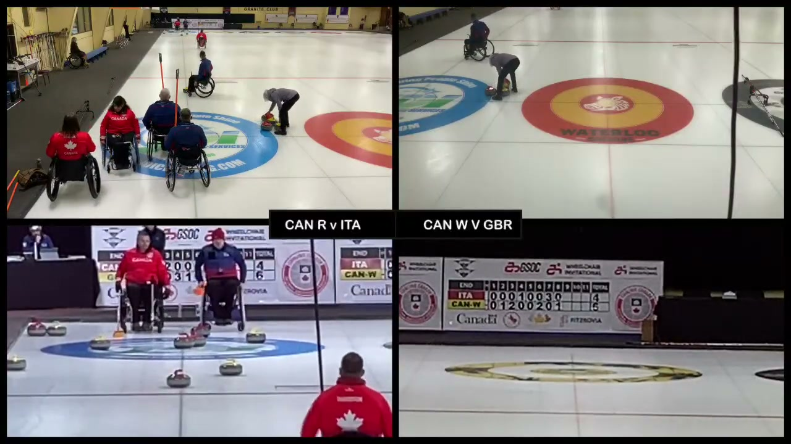

The real input is often a composite of cameras, ends and even matches. Reliable reconstruction starts by separating those views.
23 September 2026 · Eight recordings · Visual evidence, not a detector benchmark

GSOC recording at 2:18:42: four panels and two matches. Source ↗
The main finding
Split-screen support belongs in the core product. Seven of eight sampled recordings contain composite views. A single whole-frame calibration and one-game-per-video assumption would fail on this collection.
317catalogue entries, first tab
8recordings visually sampled
64 + 24systematic frames + temporal frames
18.25 hcombined recording duration—not time watched
01
What changed after looking.
Input architecture
Panels are not matches.
A panel can contain multiple sheets; two panels can show opposite ends of one sheet; four panels can cover two matches. Richmond also changes the view within panels across sampled times.
Represent recording → panel/view interval → sheet/end association → match. Calibrate each camera view independently.
Image quality
Four recordings offer only 480p.
The 2022 team and training sources often split that small canvas again. Stones at the far end are much smaller than near-house stones. Upscaling cannot recover absent image detail.
Measure stone size and positional uncertainty per view. Start the split-view prototype on the clearer 1080p Canada–Korea recording.
Unexpected opportunity
Small overhead insets may help.
Leduc's main oblique views include overhead house insets. They are promising for house geometry, but crop guard areas and can duplicate stones already visible in the main view.
Treat the inset as a separate camera with explicit association; evaluate native 1440p before judging its precision.
Metadata conflict
Verify the teams before exporting.
The GSOC title/catalogue says CAN Red–GBR and CAN White–ITA. On-screen labels in sampled frames say CAN R–ITA and CAN W–GBR. The audit cannot establish which is correct.
Flag the conflict. Preserve observations, but do not silently attach them to validated team identities.
Wheelchair footage must drive the design. Wheelchair players are visible in all eight sampled recordings. Occlusion around the house is a recurring issue. The earlier 2018 Olympic mixed-doubles pilot remains a geometry experiment; it does not establish performance on this customer collection.
02
Inspect the actual recordings.
Each card separates observed evidence from engineering judgement. Open the contact sheets to see all systematic samples, not only the featured frame. Source links jump to the requested sample time.
Evidence at 1:18:00 · Open source at this time ↗ Retrieved title: China vs Canada | Wheelchair Curling Round Robin | Day 1 | Beijing 2022 Paralympic Winter Games Highest offered height: 1080p; sample uses format 137.
Observed. Edited single-view broadcast: useful near-overhead house views, guard-area crops, player close-ups and oblique views. Digital score/end/stone overlay is present in the samples.
Opportunity. Best geometric control example: some views expose rings, centre/tee lines and distinct red/yellow stones.
Difficulty. Camera cuts and framing changes invalidate a single calibration. House crops do not establish full guard coverage. People can occlude stones.
Coverage. Potentially useful board views, but no per-shot completeness established.
Decision. Use as an overhead baseline, not the sole customer acceptance example.
At 61:17, the 12-second probe changes from an overhead house view to player close-ups. A board-view detector must stop carrying the image calibration across that cut.
Evidence at 32:02 · Open source at this time ↗ Retrieved title: 2022 WWhMDCC - CAN v. LAT (RR Session 2) Highest offered height: 480p; sample uses format 135.
Observed. Two side-by-side oblique camera views with physical scoreboards. Only 480p offered in this metadata snapshot. Foreground players and wheelchairs overlap the house in several samples.
Opportunity. Recurring panel geometry could support persistent per-camera calibration, if stability is verified over time.
Difficulty. Small distant stones, strong perspective, occlusions and scoreboard legibility. The views cover different ends; do not merge them as if they show the same board simultaneously.
Coverage. Some house layouts are visible; complete per-shot states and identities remain unverified.
Decision. Use as a low-resolution stress case after the 1080p split-view path works.
At 32:02, a stone travels through the left panel while the right panel contains the other end's house. This is direct evidence that a still image alone cannot label the whole recording as settled.
Evidence at 1:41:38 · Open source at this time ↗ Retrieved title: MD MiniGames August 2022-23 (Edmonton) Highest offered height: 480p; sample uses format 135.
Observed. Two camera panels, each showing parts of adjacent sheets. Players and stored/grouped stones occur around the houses. The recording lasts over two hours despite the catalogue's 'MD 2-end' description.
Opportunity. Repeated geometry and visible rink lines are suitable for testing camera/sheet registration.
Difficulty. Panel identity is not sheet identity. One frame contains several houses; team/sheet routing is necessary before state assembly. Resolution is 480p.
Coverage. No trustworthy automatic match or board completeness can be inferred from the catalogue row alone.
Decision. Treat as a multi-sheet training challenge. Do not use '2-end' as the recording duration or assume one game per file.
Evidence at 1:08:52 · Open source at this time ↗ Retrieved title: Fours Game August 2022-23 (Edmonton) Highest offered height: 480p; sample uses format 135.
Observed. Two recurring oblique end views, a physical scoreboard, near-house wheelchair occlusions and groups of stones near the side/back area. The nearer view includes a foreground barrier.
Opportunity. Stable-looking framing in the eight sampled images offers a useful calibration-persistence test.
Difficulty. 480p, perspective and occlusion limit stone separation. Need to distinguish active stones from stones outside play and avoid inferring that all detected stones belong to the current board.
Coverage. House visibility varies; continuous post-shot coverage not established.
Decision. Keep as a distinct training-footage test after competition footage.
Evidence at 2:00:49 · Open source at this time ↗ Retrieved title: Richmond 2022 - RR2 - CANr v. KOR, CANw v. BC2 Highest offered height: 480p; sample uses format 135.
Observed. Split screen contains different sheets, with physical scoreboard sheet numbers 3 and 4 visible. The view within a panel changes between ends across sampled times. The catalogue associates two matches with this recording.
Opportunity. Explicit sheet numbers can help establish routing and maintain match-specific timelines.
Difficulty. A panel is not a permanently fixed camera; recalibration and end-direction tracking are needed. The rink logo interrupts ring appearance. Only 480p is offered.
Coverage. Two match outputs may be needed from one video; target selection and mapping must be explicit.
Decision. Use as a multi-match/camera-switching stress case. Keep all rows for this video in one evaluation split.
Evidence at 1:02:52 · Open source at this time ↗ Retrieved title: Frazier/Purvis vs. Joseph/Thiessen - Draw 1 - Leduc Mixed Doubles Wheelchair Curling Event Highest offered height: 1440p; sample uses format 299.
Observed. Two main oblique panels plus two small overhead house insets, physical scoreboard and sheet label. Highest available height is 1440; audit samples use 1080p AVC.
Opportunity. Overhead insets may make house calibration easier than the main views. Wider main views can provide complementary guard context if associated correctly.
Difficulty. Inset resolution is a fraction of the full frame. Insets crop guard areas and may be occluded. The same stone may appear in multiple views and must not be counted twice.
Coverage. House geometry is promising; all-stone reconstruction still requires coverage and view-association checks.
Decision. Use as a second input family and test whether native 1440p improves small-inset position accuracy.
In the probe starting 62:52, people move while house stones appear stable in several samples. Stationarity checks should focus on stones/board regions, not require the whole image to be motionless.
Evidence at 1:48:15 · Open source at this time ↗ Retrieved title: CAN : KOR 캐나다 : 대한민국 - RR - WWhCC 2024 Highest offered height: 1080p; sample uses format 137.
Observed. Two side-by-side end views at 1080p, physical scoreboard and substantial wheelchair/player occlusion. The sample at 108:15 exposes a relatively clear house in the right panel.
Opportunity. A strong first customer-style development case: one catalogued match, recurring geometry and better resolution than the 2022 team recordings.
Difficulty. Perspective is still strong and one house can be crowded while the other is clear. Need active-end selection, per-panel calibration and temporal occlusion handling.
Coverage. Clearer candidate states exist; automatic reconstruction of every shot is not demonstrated.
Decision. Prioritise a full-video prototype on this source; use the broadcast as a control and other matches as later validation.
Evidence at 2:18:42 · Open source at this time ↗ Retrieved title: GSOC Wheelchair Invitational - Draw 1 - CAN Red vs GBR; ITA vs CAN White Highest offered height: 720p; sample uses format 136.
Observed. Four camera panels cover two sheets/games. On-screen labels read 'CAN R v ITA' and 'CAN W v GBR', while the retrieved title and catalogue pair CAN Red with GBR and CAN White with ITA.
Opportunity. Four views provide complementary end coverage once camera, sheet and team mappings are verified.
Difficulty. Match-label conflict requires review rather than silently choosing one source. Each panel has only a fraction of the 720p canvas; wheelchairs, poles and rink-edge stones complicate detection.
Coverage. Cannot assign validated team identities using the current metadata alone.
Decision. Quarantine the team mapping for review; retain raw observations. Use this as the explicit multi-match acceptance challenge.
27 repeated target groups. Some correspond to distinct matches or playlist contexts rather than accidental duplicates.
Preserve match rows and recording identity separately. Never split the same video between training and testing.
Playlists need expansion
28 rows include a playlist parameter; one is a playlist-only URL. This audit keys video links by their primary video ID.
317 rows is not the number of available matches or recordings. Playlist enumeration remains future ingestion work.
YouTube sample accessible
Metadata and image frames retrieved for all eight selected sources.
This verifies those eight only, not every link in the catalogue.
One Drive probe blocked
The Wetzikon CAN–ITA file returned HTTP 401 to an unauthenticated request.
That file needs an authorised access path before auditing. The other Drive files were not checked.
Rock Channel unresolved
The gold-match page returned HTTP 200, but page retrieval did not verify playback or expose usable media to this audit.
Do not count the page as accessible video. The YouTube GSOC source was inspected separately.
Inconsistent metadata fields
Source labels include “Us”, “US”, “MD” and “4s”; event spellings vary. One row explicitly says “not available”.
Preserve original values; normalise source, format and event into separate fields rather than interpreting the column uniformly.
Normalised primary targets: 276 YouTube video IDs, 10 Drive files, 2 Rock Channel pages, 1 playlist-only URL and 1 missing marker. These are catalogue counts, not independently confirmed playable videos. Full catalogue audit JSON →
04
What I would build next.
Start with a complete video workflow on customer-style footage. Use a broadcast control to distinguish geometry problems from the harder split-screen reconstruction problems.
Upload → identify panels & view changes → associate sheet / end / match → calibrate each view → detect and follow stones → select settled states → reconstruct a timeline with explicit gaps
First customer-style case
2024 Canada–Korea: one catalogue match, two recurring views and 1080p. Build panel selection, active-end handling and per-view calibration before attempting whole-game state claims.
Geometric control
Beijing China–Canada: use clear overhead candidates to establish a detector/calibration baseline. Report this separately so easier broadcast views do not conceal customer-footage failures.
Second family
Leduc: support overhead insets without double-counting stones. Test whether the insets can supply useful house coordinates and how wider views contribute guard coverage.
Stress cases
480p team recordings, multiple sheets and GSOC identity conflicts. Keep failures visible and measure how much video requires review. Do not label a partial house as a complete board.
These eight are now development/audit examples. I have inspected them, so they should not be presented as an untouched final test set. Reserve separate recordings—and preferably an entire event/camera setup—for final evaluation. Keep all panels, clips and catalogue aliases of each recording in the same partition.
Measure usefulness, not just detection accuracy.
Board coverage: fraction of independently labelled post-shot states reconstructed, with flagged gaps included in the denominator.
State accuracy: missed/extra stones, colour or team errors, position error, and complete-board correctness. Report these separately by footage family.
Temporal correctness: shot-boundary errors, incorrect active-end selection, camera cuts and mistaken merging of observations.
Customer effort: review/correction time per hour of footage, processing time and failure recovery.
Identity integrity: wrong match/sheet assignments should be reported explicitly, not hidden inside average coordinate error.
The remaining customer decision is which output matters first—post-shot board timelines, searchable clips, or a specific analysis workflow—and what coverage/review burden is acceptable. This audit establishes the input challenges; it does not invent acceptance thresholds on the customer's behalf.
Rust implication: typestate is useful at boundaries such as UnassignedView → SheetAssociatedView and PartialObservation → ValidatedSnapshot. Runtime evidence must justify those transitions. The footage findings strengthen the case for a typed domain core, not for an immediate physics-engine rewrite.
05
Method, limits and reproducibility.
Selected eight recordings deliberately to span years, source labels, training/competition, single/shared catalogue links and variants. This is a purposive reconnaissance sample, not a random estimate of catalogue-wide difficulty. For each video, requested frames at 8%, 20%, 32%, 44%, 56%, 68%, 80% and 92% of its reported duration.
Frames were extracted from direct AVC media, selecting the highest offered resolution up to 1080p. No full-match download was required. One transient frame-fetch timeout was retried successfully: all 64 systematic frames are present. Four additional 12-second windows were sampled at one frame per two seconds, yielding 24 temporal frames. These probes were selected after the initial visual inspection.
Timestamps identify requested source positions, not independently verified exact frame indices. Sparse samples can reveal cuts, motion, panels and occlusion; they cannot prove continuous coverage, camera synchronisation, centimetre accuracy, or reconstruction of every delivery. No detector, calibration benchmark or full-match reconstruction was run in this audit. Findings are AI visual assessments and need human review before becoming ground-truth labels.
Frames remain local research evidence with source attribution. Source owners retain rights to the footage; the catalogue and these local downloads do not establish commercial reuse permissions. Nothing was published or changed in the spreadsheet.